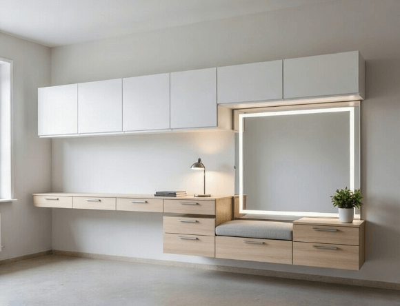
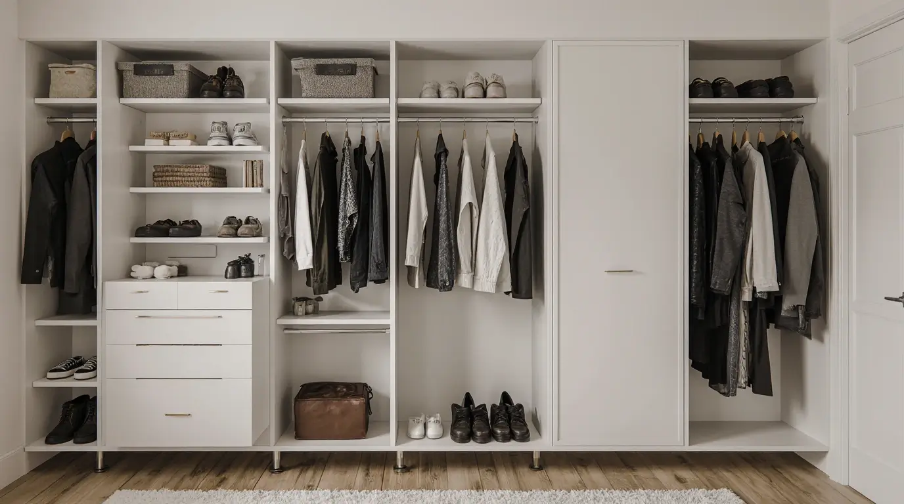
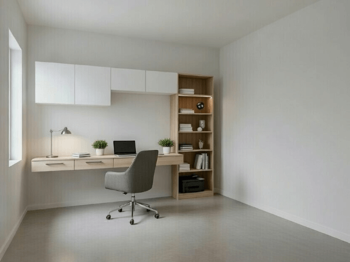
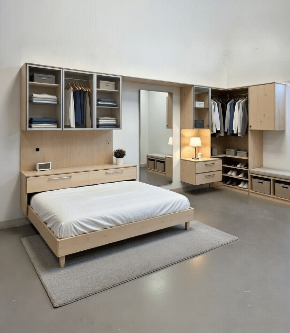

Mittatilauskalusteet
Suunnittelemme ja valmistamme juuri sinun tilaasi sopivat kalusteet Joensuussa ja Pohjois-Karjalassa
Unelmien kalusteet juuri sinun tilaan Joensuussa
Mittatilauskalusteet ovat ratkaisu, kun haluat täysin yksilöllisen ja tilaan sopivan kokonaisuuden. Suunnittelemme ja valmistamme huonekalut, jotka sopivat täydellisesti juuri sinun kotisi mittoihin, tyyliin ja käyttötarpeisiin. Käytämme vain laadukkaita kotimaisia puulajeja, ja jokainen kaluste tehdään huolella käsityönä omassa verstaassamme Joensuussa, Pohjois-Karjalassa.
Mittatilauskalusteilla saat juuri sellaisen ratkaisun kuin haluat – olipa kyse sitten olohuoneen seinustalle räätälöidystä TV-kaapistosta, makuuhuoneen vaatehuoneesta tai työhuoneen kirjahyllystä. Materiaalit, värit, vetimet ja yksityiskohdat valitaan yhdessä, ja näet lopputuloksen jo suunnitteluvaiheessa 3D-visualisoinneista. Palvelemme Joensuun lisäksi myös Kontiolahden ja Liperin alueella.
Prosessi
1. Kartoitus ja mittaus
Tapaamme kotonasi, keskustelemme tarpeistasi ja otamme tarkat mitat tilasta. Keskustelemme myös toiveistasi materiaalien, värien ja tyylin suhteen.
2. Suunnittelu ja 3D-visualisointi
Luomme suunnitelmat ja realistiset 3D-kuvat, joista näet tarkalleen, miltä kaluste tulee näyttämään. Teemme tarvittavat muutokset yhdessä.
3. Valmistus
Valmistamme kalusteen huolellisesti käsityönä omassa verstaassamme. Käytämme laadukkaita materiaaleja ja kestäviä liitostapoja.
4. Asennus ja viimeistely
Toimitamme ja asennamme kalusteen kotiin. Varmistamme, että kaikki on täydellisesti paikallaan ja toimii moitteettomasti.
Esimerkkejä mittatilauskalusteista

Olohuoneen seinäkaapistot
TV-seinät, kirjahyllyt ja säilytysratkaisut, jotka sopivat täydellisesti tilaan ja sisustukseen.

Vaatehuoneet
Räätälöidyt vaatehuoneet, joissa kaikki vaatteet, kengät ja asusteet pysyvät järjestyksessä.

Työhuoneen kalusteet
Ergonomiset työpöydät, hyllyt ja säilytysratkaisut kotitoimistolle.

Makuuhuoneen kalusteet
Sängynpäädyt, yöpöydät ja vaatekaapistot, jotka tekevät makuuhuoneesta rauhallisen.
Materiaalit
Käytämme vain laadukkaita ja kestäviä materiaaleja. Suosimme kotimaisia puulajeja ja ekologisia pintakäsittelyaineita.
Tammi
Klassinen ja kestävä valinta. Tammikalusteet ovat ajattomia ja ikääntyvät kauniisti.
Koivu
Vaalea ja lämmin puulaji, joka sopii erityisen hyvin pohjoismaiseen sisustukseen.
Mänty
Kotimainen mänty on ekologinen ja kaunis valinta. Oksainen pinta tuo luonnollista tunnelmaa.
MDF ja vaneri
Käytämme laadukkaita levymateriaaleja runkomateriaalina, kun ne sopivat rakenteeseen parhaiten.
Kiinnostuitko?
Ota yhteyttä, niin suunnitellaan yhdessä juuri sinulle sopivat mittatilauskalusteet. Ensimmäinen tapaaminen ja suunnittelu ovat maksuttomia.
Pyydä ilmainen suunnitelma